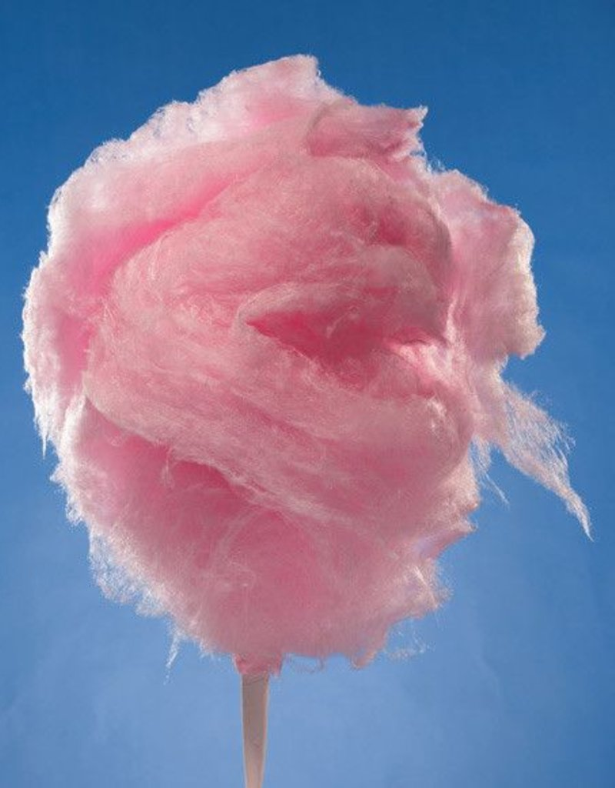

Cotton Candy
Description
A buzz of sugar
Ingredients
- Sugar
- Corn syrup
- Water
- Vanilla extract
- Food coloring
- Cooking spray
- Parchment paper
Steps
Step 1: Mix corn syrup, water,salt and sugar in a pot.
Step 2: Stir the pot over medium high until sugar is melted
Step 3: Transfer sugar into heat isolated bowl
Step 4: Use your whisk to move back and forth across the sugar strands until it becomes a "nest" of strands.
Step 5: Wait for 10 minutes for the sugar to thicken